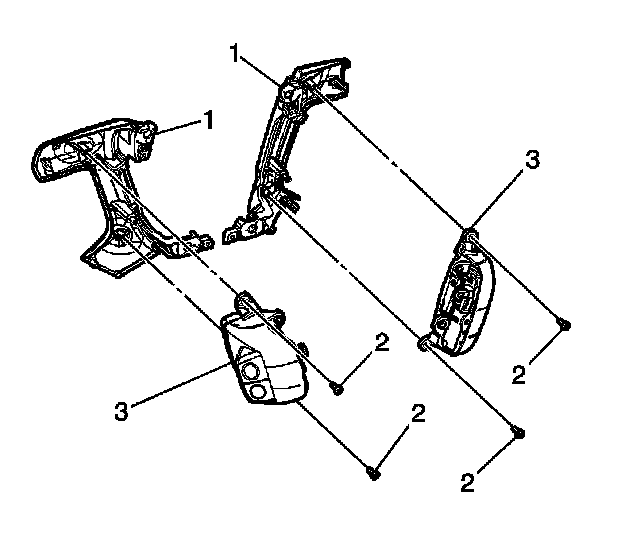

Interior - Steering Wheel Cover Warped/Paint Peeling
TECHNICALBulletin No.: 08-02-35-004A
Date: March 31, 2009
Subject:
Steering Wheel Lower (Spoke) Cover Warped, Loose, Discolored, Paint Peeling or Fits Poorly in Steering Wheel (Replace Steering Wheel Lower Cover, As Needed)
Models:
2007-2009 Cadillac Escalade, Escalade ESV, Escalade EXT (Including Hybrids)
2007-2009 Chevrolet Avalanche, Silverado (New Body Style), Suburban, Tahoe (Including Hybrids)
2007-2009 GMC Sierra (New Body Style), Sierra Denali, Yukon, Yukon XL, Yukon Denali, Yukon Denali XL (Including Hybrids)
Supercede:
This bulletin is being revised to update the models to include 2009 model year and add Subject and Condition information. Please discard Corporate Bulletin Number 08-02-35-004 (Section 02 - Steering).
Condition
Some customers may comment that the left and/or right steering wheel lower (spoke) cover is warped, loose, discolored or just fits poorly in the steering wheel. They may also comment that the paint finish seems to be peeling.
Cadillac Escalade Wheel Shown, Others Similar
The steering wheel lower covers (1) are now available for service as separate parts.
Correction
Replace the appropriate steering wheel lower cover using the steps below.
1. Open the hood.
2. Remove the underhood fuse block cover.
3. Remove the horn fuse from the underhood bussed electrical center (UBEC).
4. Disable the supplemental inflatable restraint (SIR) system. Refer to SIR Disabling and Enabling in SI.
5. Remove the inflatable restraint steering wheel module. Refer to Inflatable Restraint Steering Wheel Module Replacement in SI.
6. Disconnect the horn switch connector and remove the horn switch. Refer to Steering Wheel Horn Switch Replacement in SI.
7. Remove the horn contact tab screws and tabs from the steering wheel lower cover.
8. Disconnect the control switch harness from the steering wheel retainer and disconnect the electrical connector from the control switch.
9. Remove the steering wheel lower cover and control switch assembly from the steering wheel.
10. Remove the steering wheel control switch from the cover. Refer to Steering Wheel Control Switch Assembly Replacement in SI.

11. Install the steering wheel control switch (3) into the new cover (1) with the screw fasteners (2).
12. Tighten the steering wheel control switch assembly screws.
Tighten
Tighten the switch assembly screws to 1 Nm (9 lb in).
13. Install the steering wheel lower cover assembly into the steering wheel shroud and seat the retaining clips into the steering wheel.
14. Route the control switch harness into the steering wheel retainer and connect the electrical connector to the control switch.
15. If the opposite side steering wheel lower cover requires replacement, repeat Steps 7-14.
16. Install the horn contact tabs and screws.
17. Tighten the horn contact tab screws.
Tighten
Tighten the horn contact tab screws to 1 Nm (9 lb in).
18. Install the horn switch and horn contact bolts. Refer to Steering Wheel Horn Switch Replacement in SI.
19. Tighten the four horn contact bolts.
Tighten
Tighten the horn contact bolts to 8 Nm (71 lb in).
20. Connect the electrical connector for the horn switch.
21. Install the inflatable restraint steering wheel module. Refer to Inflatable Restraint Steering Wheel Module Replacement in SI.
22. Enable the supplemental inflatable restraint (SIR) system. Refer to SIR Disabling and Enabling in SI.
23. Install the horn fuse.
24. Install the underhood fuse block cover.
25. Close the hood.
26. Verify proper operation of the horn and the control switches.
Parts Information
For part numbers and usage, refer to steering wheel lower cover in Group 6.512 of the appropriate parts catalog.
Warranty Information
For vehicles repaired under warranty, use the table shown above.

Disclaimer